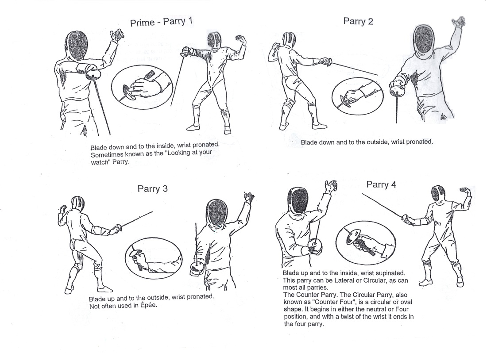
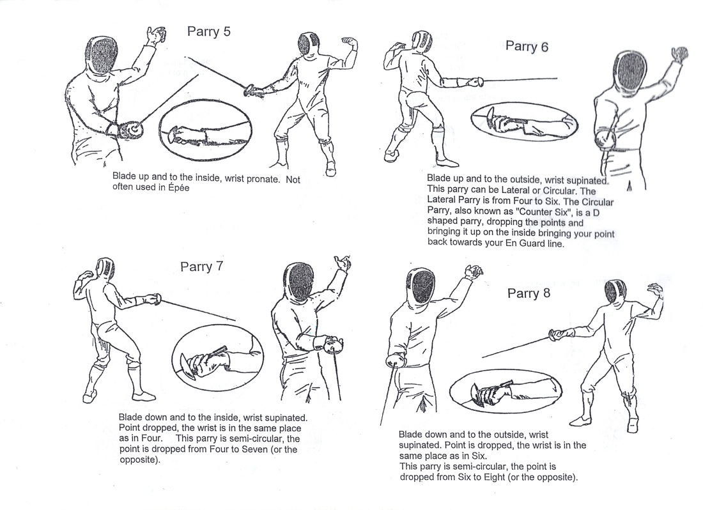

The 8 Parries
In fencing, a parry is a defensive action where a fencer uses their blade to block the opponents blade from hitting them. There are 8 defined parries, and some are used more than others in certain weapons. For example, the most common parries in foil are parry 4 and 6, and the most common in Sabre are parries 3, 5 and 6. Below is an image showing all of the 8 parries.
 